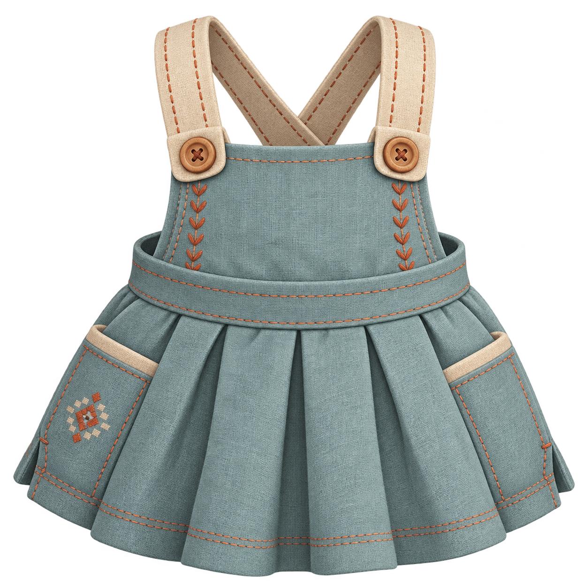
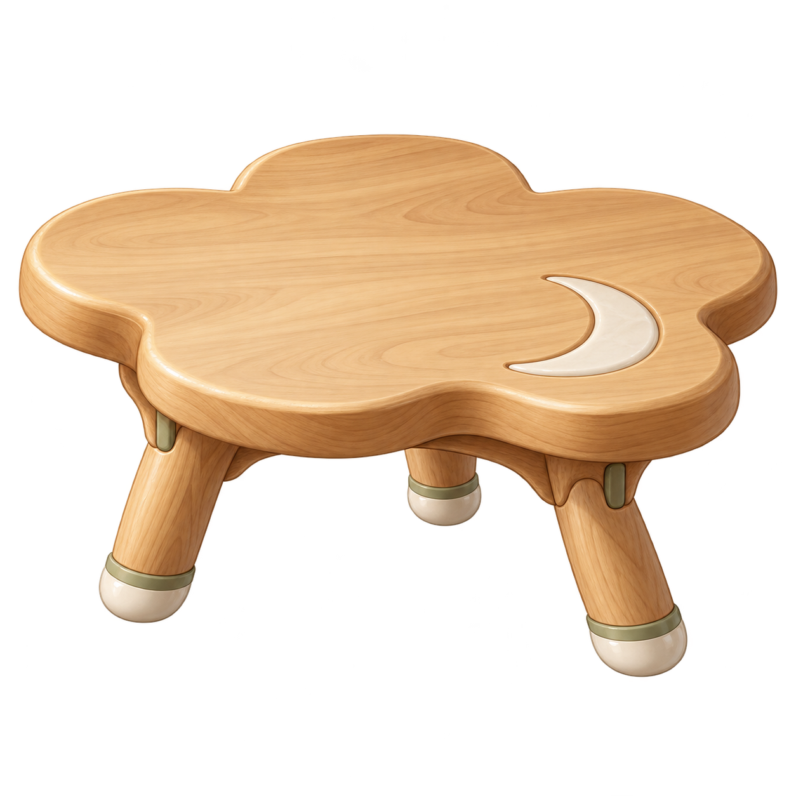
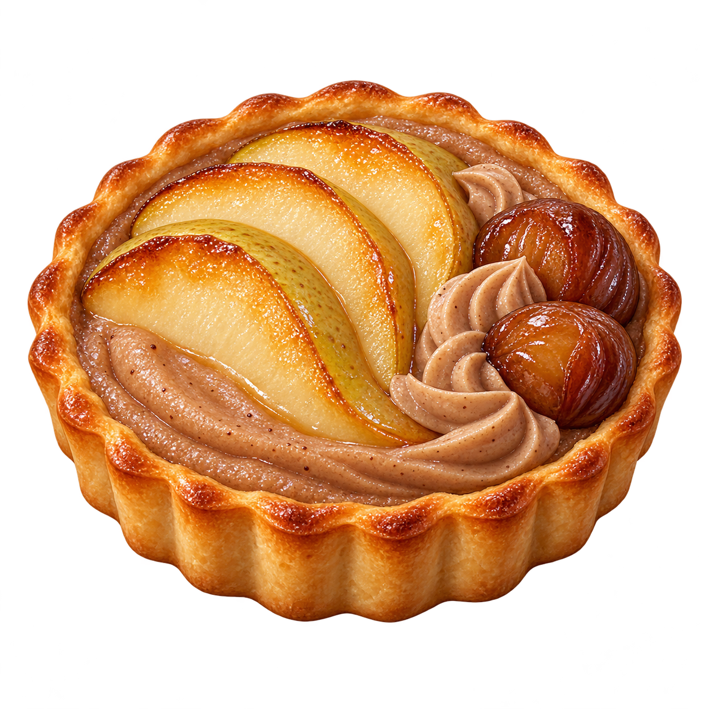

お洋服
北欧アトリエのサロペットドレス
北欧の布しごと。木のボタンと箱ひだのドレス。
元PNGを変更せず表示
SHA-256
SHA-256
f481b03824bda9b57183908042a7390ac269c63a0966ad2e1e2024195c82977dお洋服・インテリア・食べ物の、新しい静止原画見本です。背景色だけを切り替えて、形や素材の雰囲気を見比べられます。
静止原画の候補です。着用・全角度・実配置・食べる動作・報酬・所持と保存は、別に確認します。

北欧の布しごと。木のボタンと箱ひだのドレス。
f481b03824bda9b57183908042a7390ac269c63a0966ad2e1e2024195c82977d
和モダンの木と陶器。花びらの厚い天板と低い三本脚。
9c1bc11d9453da40c188fb3127d594847fad22a2ac67f75cec48645882dc364b
秋のパティスリー。洋梨と栗、焼き色と艶を楽しむタルト。
6f950cf1af9b307853f1fc75383a36d935cc427bf8993930cb48cc7edf036562